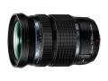

器材库 > APS画幅镜头 > M.ZD 12-100/4.0 ED IS PRO

详细规格
发布日期
2016-09-20
焦距
12mm-100mm
等效35mm画幅焦距
24mm-200mm
最大光圈
f/4
最小光圈
f/22
视角（对角）
84° - 12°
镜头结构
17片/11组
非球面镜片
3片
低/超低色散镜片
5片
光圈叶片
7片
最近对焦距离
15cm
最大放大倍率
0.3倍
驱动马达
MSC
滤镜口径
72mm
镜头卡口
Micro 4/3
防抖
是
颜色
黑色
尺寸
77.5×116.5mm
重量
561g
附件
镜头遮光罩LH-76B 、镜头盖LC-72C、镜头后盖LR-2、说明书与保修卡
备注
防尘与防水溅结构
elliotliu2018-11-14 15:154.92 分
操作性 5.00耐用性 5.00性价比 4.50解像力 5.00色彩还原 5.00机械结构 5.00
longyu11292018-01-19 16:204.83 分
操作性 5.00耐用性 5.00性价比 4.00解像力 5.00色彩还原 5.00机械结构 5.00
sccdlw2017-02-22 18:42
产品图 / 样片
M.ZD 12-100/4.0 ED IS PRO
评测 / 相关文章
- 详细内容 （存档）
- ［资讯］奥巴12-100销售良好 （存档）
- ［资讯］奥巴12-100镜头值得推荐 （存档）
- ［资讯］奥巴12-100mm是一支令人印象深刻的镜头 （存档）
- ［资讯］Imaging Resource公布年度镜头获奖结果 （存档）
- ［资讯］奥林巴斯三款新镜头发售在即 （存档）
- ［资讯］奥林巴斯M.ZD 12-100/4.0 ED IS PRO样片 （存档）